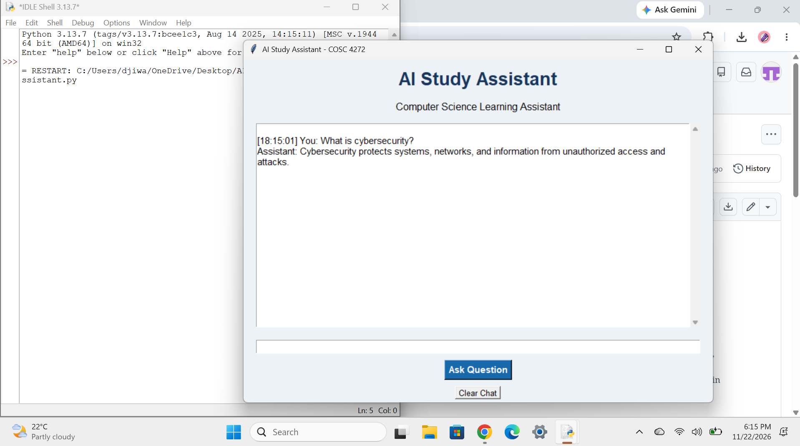

About Me
I am an Information Systems student at Lamar University with a strong interest in computer programming, cybersecurity, database management, and computer networks. I am pursuing my bachelor's degree with an anticipated graduation date of December 2027.
My academic experience has provided opportunities to work with Python, C++, SQL, Linux, and network simulation tools. Through coursework, I have developed an understanding of software development, data organization, system security, and troubleshooting. I enjoy applying technical concepts to practical problems and learning how different technologies work together.
One of my academic projects involved using the ns-3 network simulator to compare TCP NewReno and Linux Reno. This project strengthened my ability to configure network simulations, evaluate performance measurements, and interpret technical results. I have also worked on MySQL database assignments involving relational tables, views, stored procedures, and triggers.
Alongside my studies, my professional experience in correctional operations has helped me develop leadership, communication, decision-making, and teamwork skills. Working in a structured environment has taught me the importance of accountability, documentation, and following established procedures.
My goal is to continue strengthening my technical abilities while preparing for opportunities in information technology, systems administration, cybersecurity, and software development. I am particularly interested in using technology to improve organizational efficiency, information security, and operational decision-making.
I am building a portfolio of hands-on projects that demonstrate how I learn, test, and document software. My AI Study Assistant introduced me to local language models and responsive desktop interfaces, while my Personal Expense Tracker gave me experience with data validation and persistent file storage. As I progress through my degree, I plan to deepen my understanding of secure application development, database systems, and practical IT support. I value clear documentation and reliable solutions that other people can understand and use.
Technical Skills
- Programming: Python, C++, C, SQL
- Operating Systems: Linux Ubuntu, Windows
- Databases: MySQL, MySQL Workbench
- Networking: TCP/IP, DNS, TCP congestion control, ns-3
- Cybersecurity: Access control, security fundamentals
- Artificial Intelligence: Ollama, Llama 3.2, AI-assisted development
- Development Tools: GitHub, Python IDLE
- Professional Skills: Leadership, teamwork, communication
Academic and Technical Projects
Project 1: AI Study Assistant
Developed and tested a Python desktop application that uses the Llama 3.2 artificial intelligence model through Ollama to answer computer science questions.
The application includes an interactive graphical user interface, AI-generated explanations, conversation display, a Clear Chat feature, and background processing to keep the application responsive while generating answers.
Technologies: Python, Tkinter, Ollama, Llama 3.2, Threading

This is a desktop application that runs locally with Python and Ollama. Setup instructions are available in the project's GitHub README.
Project 2: TCP NewReno vs. Linux Reno
Completed a computer networking project using the ns-3 network simulator to compare TCP NewReno and Linux Reno congestion control algorithms.
The project analyzed congestion window behavior, network throughput, and packet loss under different network conditions, including a 5 Mbps bottleneck and a 50 ms bottleneck delay.
Course: CPSC 4317 - Computer Networks
Technologies: C++, ns-3, Ubuntu Linux, Python
View TCP Project Source CodeBaseline Congestion Window Comparison
.png)
5 Mbps Bottleneck Comparison
.png)
50 ms Bottleneck Delay Comparison
.png)
Project 3: Personal Expense Tracker
Developed a personal desktop application to record income and expenses, organize transactions by category, and calculate total income, total expenses, and the remaining balance.
The application features a Tkinter graphical interface, input validation, transaction deletion, and CSV file storage so records can be saved and loaded between sessions.
Technologies: Python, Tkinter, CSV
View Personal Expense Tracker Source CodeScreenshot uses sample transactions, not personal financial data.
Professional Resume
View or download my resume for details about my education, technical skills, projects, experience, and qualifications.
View Resume in New Tab Download Resume (PDF)If the preview does not appear on your device, use the View Resume button above.
Contact
I welcome opportunities to connect with technology professionals, recruiters, and potential employers.
GitHub: github.com/soreldjiwa
Professional email and LinkedIn profile can be added when available.